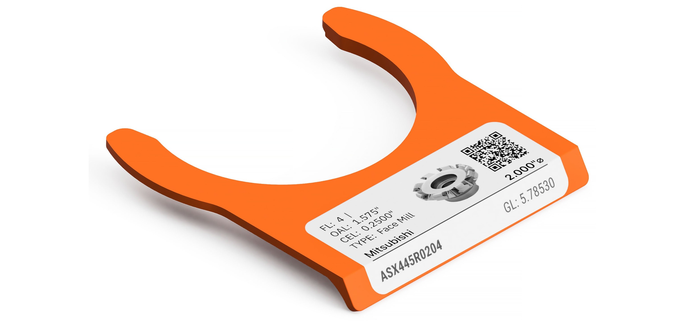

CNC shops still juggle tool lists in spreadsheets, Airtable, or CAM exports while inventory and quotes live in AirShop. The Tool Library brings cutters into the same system: one record per tool, the same reorder and source fields you use on stock items, and labels that match what is on the holder.
AirShop prints the thermal labels. PDX CNC makes the Edgeview tags and Tool Tag Tower. AirShop solves one of the hardest parts here, creating your tool library and tool labels.
Add one tool or import a CSV
Open Inventory → Tool Library to add a cutter one at a time, or import a CSV from a Fusion-style export, Airtable, or ERP. Column mapping follows common tool-library headers so you do not rebuild the sheet by hand.
Each tool gets a short AirShop code. That code shows up on the printed label and in scan URLs so the same record opens every time.
Diagram and tag preview while you edit
The tool editor separates Tool Type (what the cutter is) from Shop Use (how your team names it on the floor). Geometry fields drive a live dimension diagram and a tag preview rail, so gauge length, diameter, and SKU match the label before you print.
On the same record, the Inventory tab holds quantity on hand, low-stock thresholds, reorder quantity, and procurement sources, so tool replenishment follows the same patterns as the rest of your inventory.
Queue, print, and load holders and towers
Mark tools Queue for tool tags from the library, then print batches from Tool Tags. Defaults for label size and QR behavior live under Inventory settings. Standard stock is 1 x 2.125 in on a Dymo LabelWriter; TTS shops can use 1 x 1.5 in.
Peel the label, fold it over the Edgeview lip, and keep gauge length readable from the rack edge. Tool on the bench: tag stays on the holder. Tool in the spindle: tag lives in the Tool Tag Tower so you still know what is loaded.

Scan a tag to open the tool
New prints encode https://airshop.work/inventory/{code}?utm_medium=ttag. Scan with a shop-floor scanner or phone camera and AirShop opens that tool’s detail page. Typing /inventory/{code} without UTM works too. Older tags that used /c/{code} or utm_medium=tag still resolve.